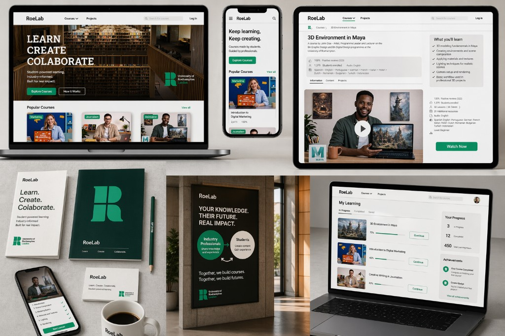
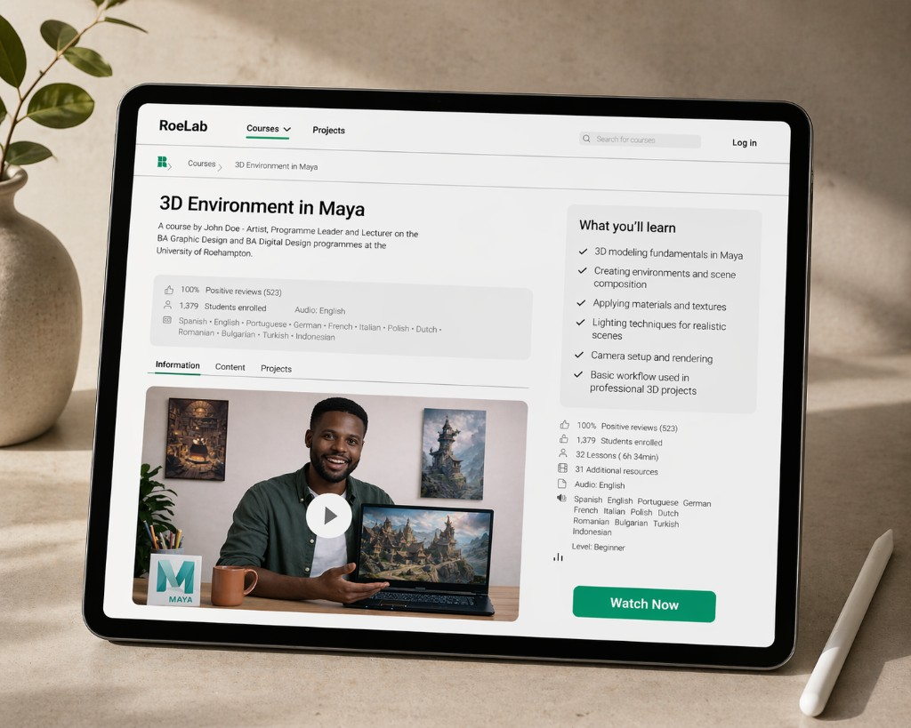
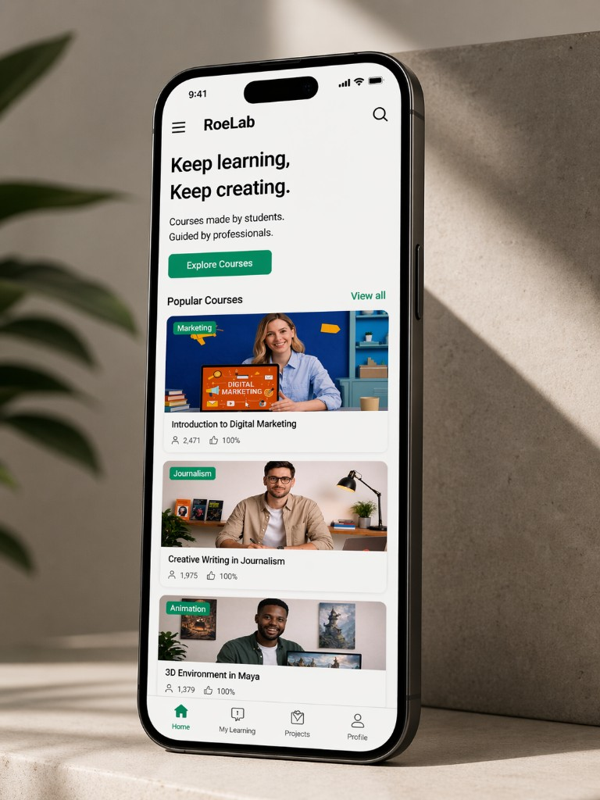

RoeLab
RoeLab is a concept for an internal digital learning platform that reimagines how students engage with professional practice. Inspired by platforms like Domestika and Coursera, RoeLab focuses on bridging the gap between academic learning and real-world experience.
The platform operates through a dual-layer system: industry professionals contribute knowledge and direction, while students collaborate to produce high-quality course content under guidance. This approach not only provides accessible, visually engaging learning materials, but also gives students valuable hands-on experience and portfolio-ready work.
RoeLab positions students not just as learners, but as active creators within an educational ecosystem, fostering creativity, collaboration, and employability.


